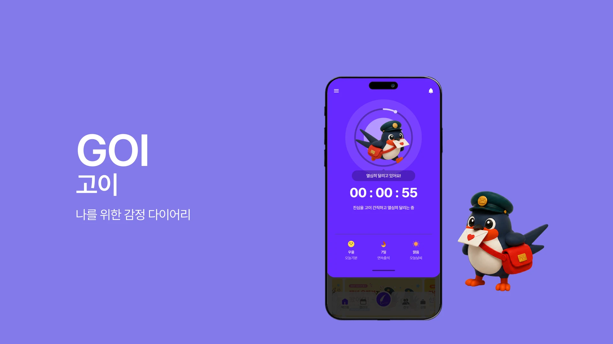

DIARY APPGOI
사이트 보기A diary app made for one focused step at a time.
GOI는 기록하는 경험을 더 가볍고 개인적으로 만들기 위해 기획한 다이어리 앱입니다. 기획, 사용자 플로우, UI 디자인, 개발과 배포까지 전 과정을 혼자 진행했습니다. 온보딩·홈·작성·캘린더·친구·상점 등 16개 화면을 설계하고 구현했습니다.
Challenge
& Solution
I rebuilt the idea as a product, not just a screen.
첫 개인 프로젝트였고 React에 익숙하지 않은 상태에서 기획부터 구현까지 혼자 결정해야 했습니다. 처음에는 HTML·CSS·JavaScript로 퍼블리싱했지만, 화면과 상태가 늘어나면서 React 컴포넌트 구조로 다시 구축했습니다.
일기 생성 흐름은 한 화면에 모든 입력을 몰아넣지 않았습니다. 제목, 컨셉, 반드시 넣을 문구, 추가 요청을 4장의 카드로 나눠 한 단계씩 집중하도록 설계했습니다. PWA를 구성해 브라우저에서도 앱에 가까운 사용 경험을 제공했습니다.
AI 생성 기능은 화면 설계와 사용자 흐름까지 구현한 프로토타입입니다. 실제 생성 모델 연동은 아직 진행하지 않았으며, 현재 완성도를 정확히 드러내는 것이 중요하다고 판단했습니다.

What
I Learned
Building it taught me how to make decisions.
혼자 끝까지 만들어 보며 화면을 설계하는 것과 실제로 동작하는 제품을 만드는 것 사이의 차이를 배웠습니다. 모르는 기술을 만나도 필요한 정보를 찾고, 작은 단위로 구현해 나가는 방법을 이 프로젝트에서 익혔습니다.
GOI에서 얻은 구현력과 AI 활용 방식은 이후 ILKW와 W:RUN으로 이어졌습니다. 세 프로젝트를 마친 지금은 다음 개선 지점도 보이지만, 그만큼 보는 기준이 생겼다는 출발점이 된 작업입니다.